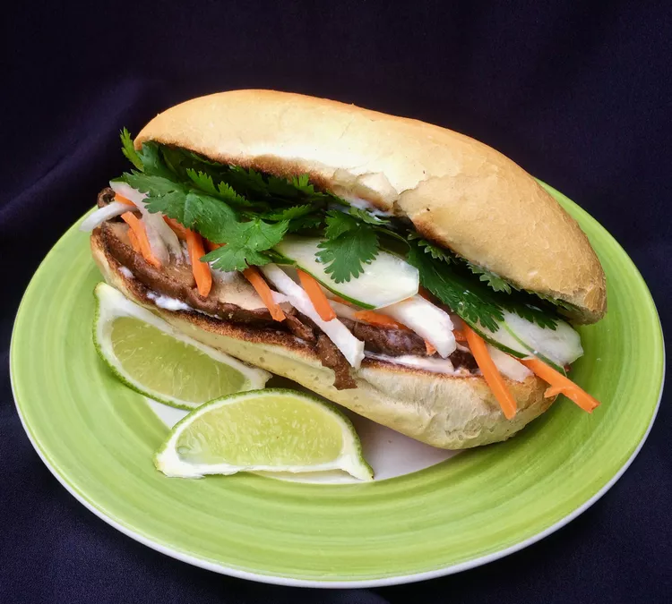

Banh Mi
Home Page

Description
This recipe for banh mi will require around half an hour to make, but yields two sandwiches. Banh mi is a traditional vietnamese dish, and this
recipe will make a traditional spin of the classic dish to create a vegetarian version of the sandwich!
Ingredients
- Carrots
- Jicama
- Onion
- Vinegar
- Water
- Soy sauce
Steps
- Combine carrots, jicama, and onion in a small bowl.
- Combine 1/2 cup vinegar, water, and sugar in a saucepan over medium heat. Stir until sugar dissolves, about 1 minute.
Remove from heat and pour pickling liquid over the vegetables. Let sit for 30 minutes.
- Whisk remaining 1/4 cup vinegar with fish sauce, soy sauce, sriracha, garlic powder, five-spice powder, salt, and pepper in a 10-inch sauté pan over
medium heat. Bring to a boil for about 3 minutes. Lower heat to medium, add mushrooms, and cook until tender, about 5 minutes.
Remove mushrooms from liquid with a slotted spoon.
- Spread 1 tablespoon mayonnaise over each roll half. Divide mushrooms evenly over the two bottom halves. Drain pickled vegetables and divide evenly over
mushrooms. Divide cucumber, jalapeño, and cilantro between the sandwiches. Add more sriracha if desired. Squeeze 1 lime wedge over filling of each
sandwich and cover with top bun half.